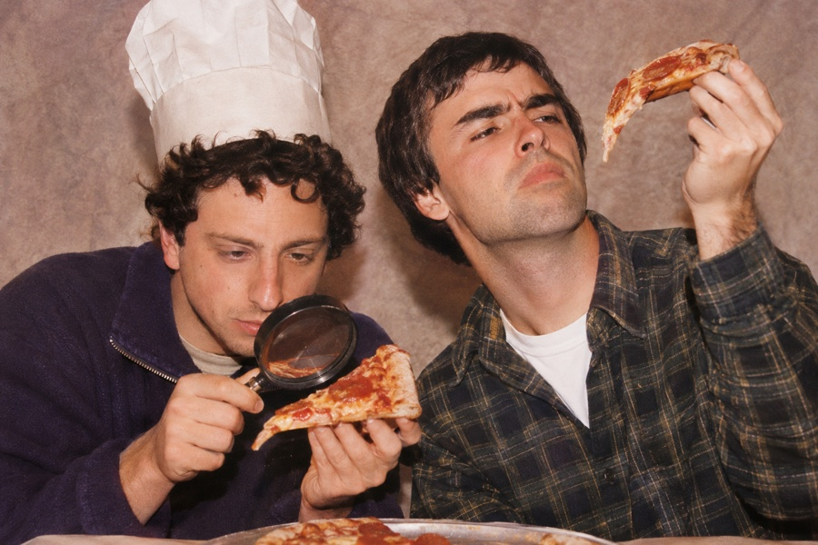

Enable JavaScript to search and calculate PageRank.
Mini Google matches every word in your query against the six supplied pages. The left column ranks matches by total keyword hits; the right ranks the same matches by PageRank.
PageRank measures a page’s importance from incoming links. A link from a highly ranked page carries more weight, and a page splits its vote among its outgoing links.
Read the original search engine paper by Sergey Brin and Larry Page.
The six pages are ranked by their links. The number of times a word appears does not change the score.